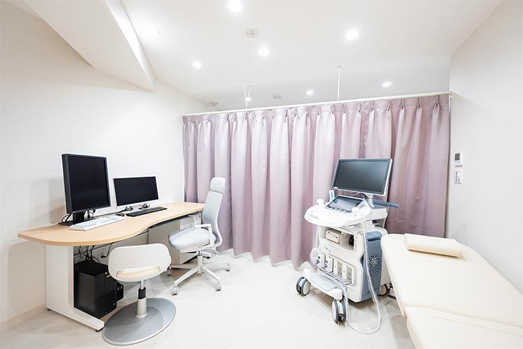
01女性医師が、
女性医師が、
じっくりお話をうかがいます
言いにくいお悩みも、まずはお話しください。同じ女性として、気持ちに寄り添った診療を心がけています。
生理のお悩みから更年期まで。
どんな小さなことも、安心してご相談ください。
過去の来院実績にもとづく目安です（リアルタイムではありません）

言いにくいお悩みも、まずはお話しください。同じ女性として、気持ちに寄り添った診療を心がけています。
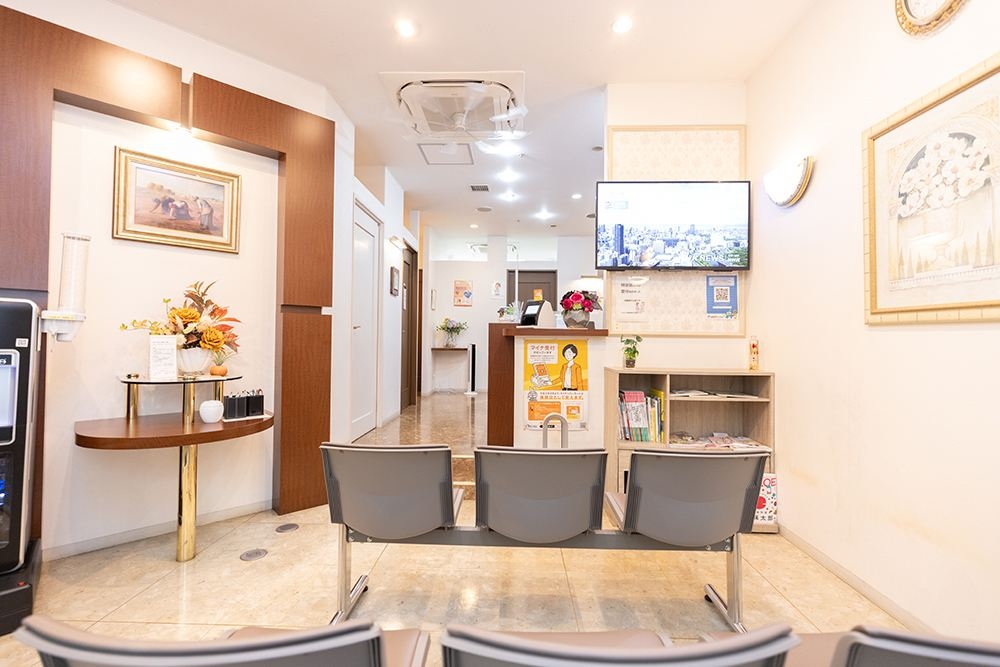
初めての婦人科から、妊娠・出産、更年期、閉経後まで。年代ごとに変わるからだを継続して診ていきます。
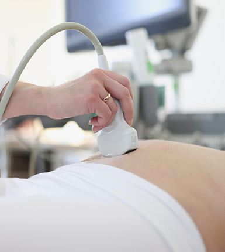
必要な検査や処置を院内で行える体制を整えています。より高度な治療が必要な場合は、連携医療機関へご紹介します。
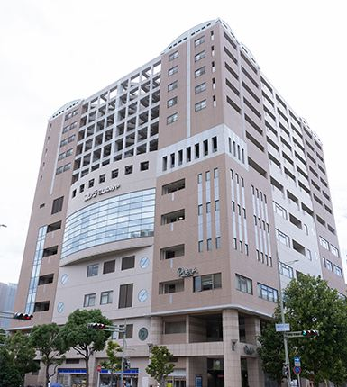
駅からすぐの立地で、お仕事や学校の帰りにも立ち寄りやすい場所です。
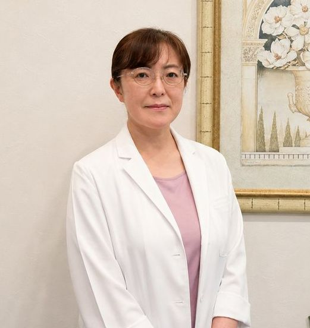
「ここに来てよかった」と、
安心してお帰りいただけるように。
木内女性クリニックで14年、婦人科のかかりつけ医として診療を続けてきました。分かりやすい説明を心がけ、「来院して良かった」と思っていただける診療を大切にしています。軽い症状でも一人で抱え込まず、どうぞ気軽にご相談ください。
検診から日帰り手術、更年期障害、避妊のご相談まで、女性の健康をトータルにサポートしてきました。
ほかに女性医師（産婦人科一般）が曜日により診療を担当しています。担当医は診療時間をご確認ください。
ご来院の流れに沿って、院内をご案内します
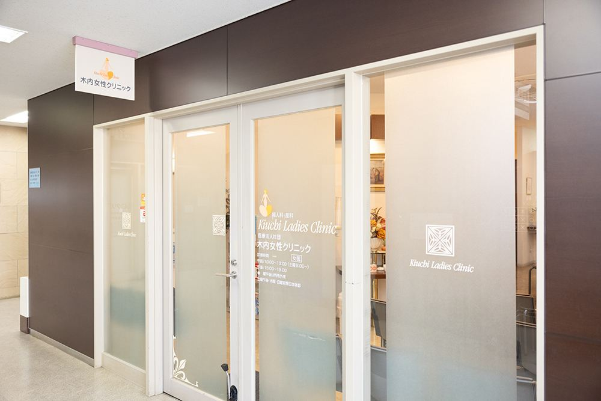
駅からすぐ。1階に案内看板があります。
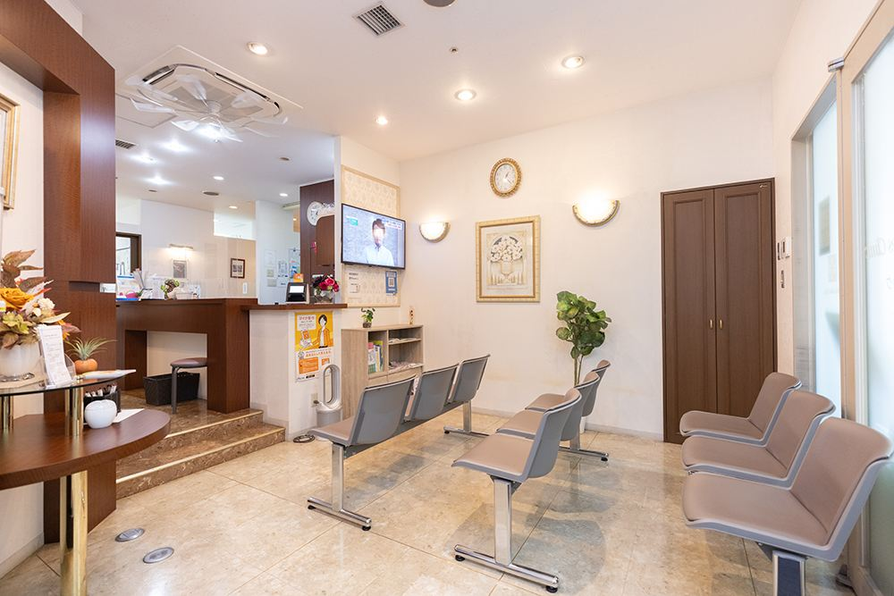
保険証のご提示と、問診の確認を行います。
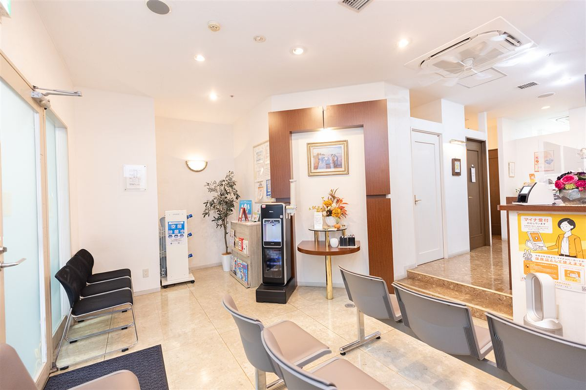
落ち着いてお待ちいただける空間です。
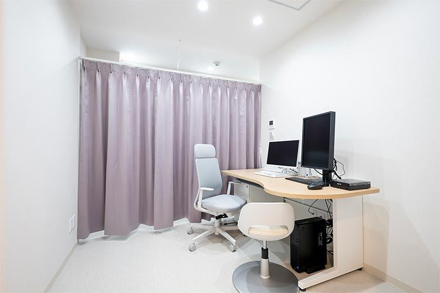
プライバシーに配慮した個室です。
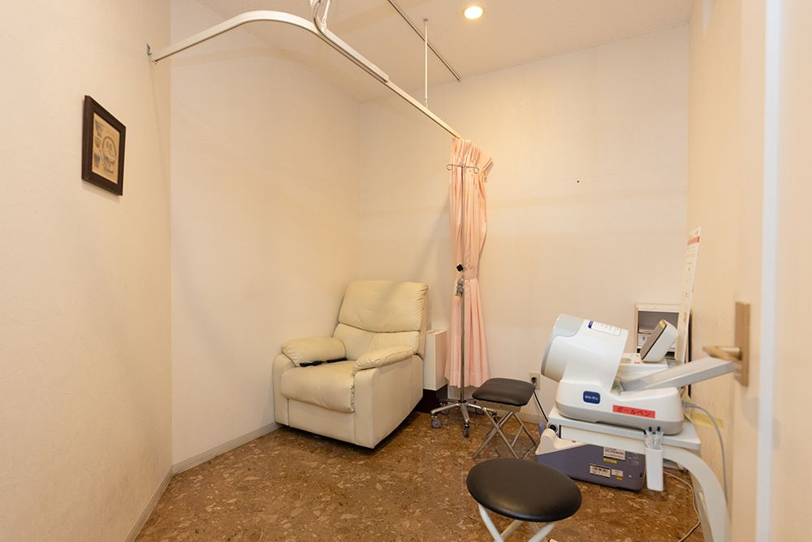
超音波検査機器など。
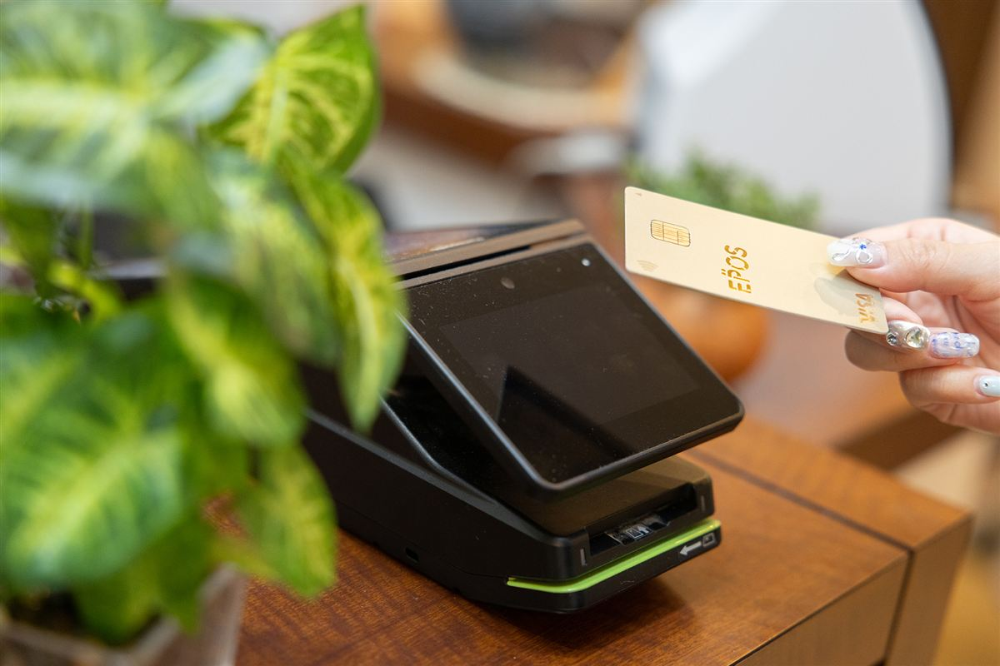
各種キャッシュレス決済に対応。
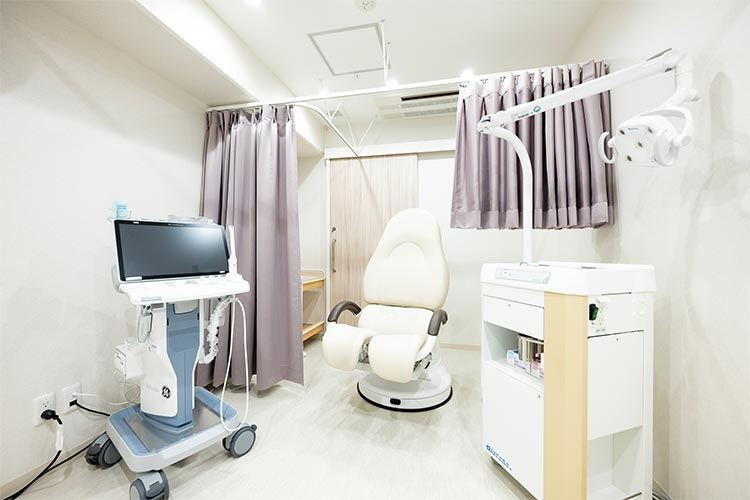
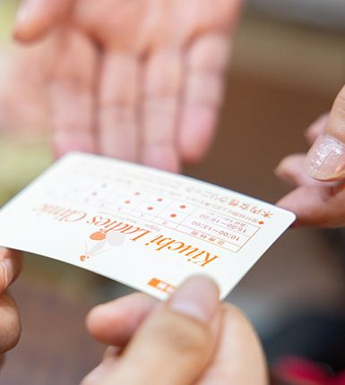
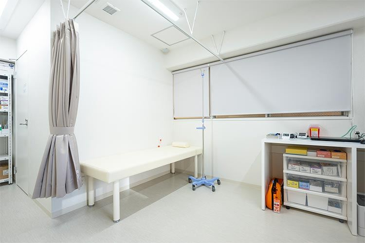
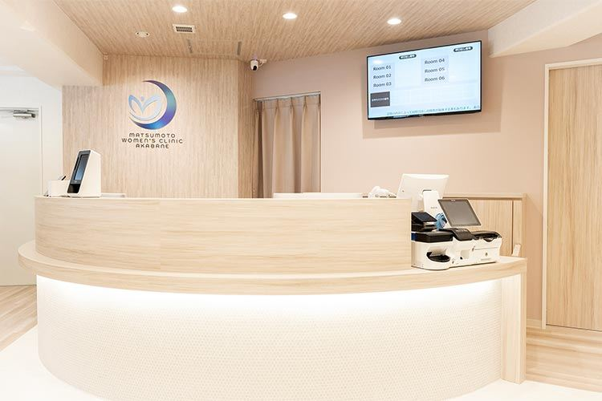
年代ごとに多いお悩みと、受診のポイント
保護者の方の付き添いも可能です。内診をしない診察もご相談いただけます。
初めての婦人科ガイドお仕事と両立しやすいよう、WEB予約とWEB問診で待ち時間を短くしています。
20〜30代の方へ「なんとなく不調」も更年期のサインかもしれません。治療の選択肢をご説明します。
40〜50代の方へ閉経後の出血は早めの受診をおすすめします。お電話でのご予約も承ります。
閉経後の方へ← スワイプで他の年代を見る →
ご予約から診察まで、5つのステップでご案内します
予約時間の10分前を目安にお越しください。受付で保険証をご提示ください。
まずはお話をうかがいます。内診や検査が必要な場合は、内容をご説明してから行います。
現金・クレジットカード・電子マネーでお支払いいただけます。
受診前に費用の目安をご確認いただけます
症状に応じた診察・検査は保険が適用されます。初診・再診や、追加の検査によって費用が変わります。
西宮市の公費検診は、受診券と自己負担額について市の最新情報をご確認ください。
料金更新日：2026年11月1日
料金表を見るはい、受診いただけます。不正出血や月経過多などは、出血中に診察したほうがよい場合もあります。検診目的の場合は、生理が終わってからのご来院をおすすめします。
症状によって異なります。内診が必要な場合は、理由をご説明し、同意をいただいてから行います。性交経験がない方は、内診以外の方法をご提案します。
ご予約の方を優先してご案内しますが、予約なしでも受診いただけます。待ち時間が長くなる場合がありますので、WEB予約をおすすめします。
保護者の方やパートナーの付き添いも可能です。お子さま連れでのご来院もご相談ください。
検査内容によって異なります。原則として、再来院いただき医師から直接ご説明します。
※回答内容は医院確認前のダミーです
よくあるご質問をすべて見る医師が監修した、女性のからだの基礎知識
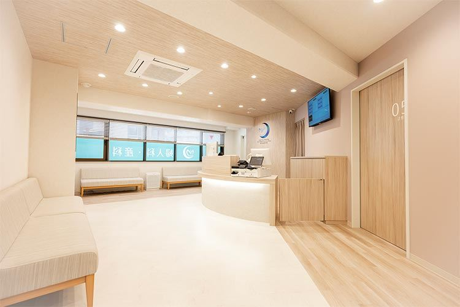
WEB予約は24時間受付中です
LINEでは休診のお知らせや健康情報をお届けします。診療に関する個別のご相談は受け付けておりません。